Play with an idea
Give a clay character a personality, send your old toys on an adventure, or spend an evening making something just for fun.
StopMotionCraft
Remember making up stories with whatever was nearby? Turn that feeling into a little film. Bring a toy to life, make something with friends, or give your product a story of its own.
For iPhone, iPad, and Mac
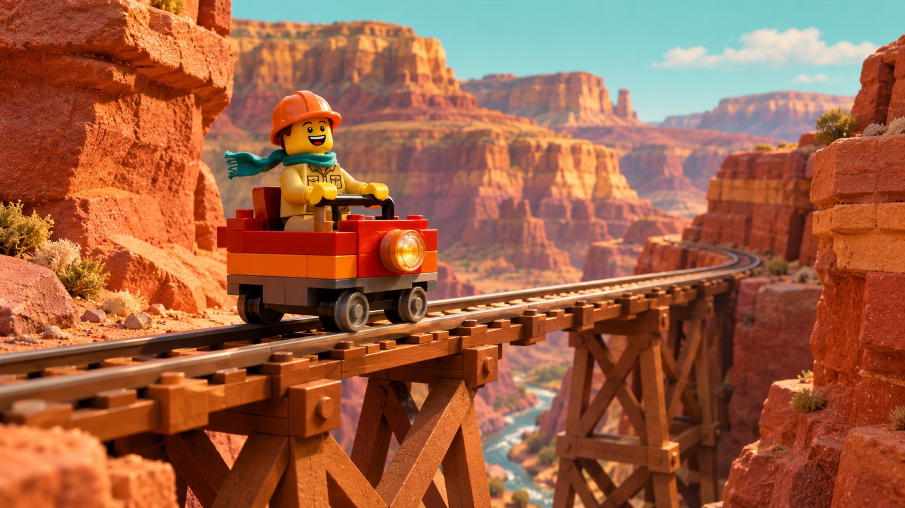
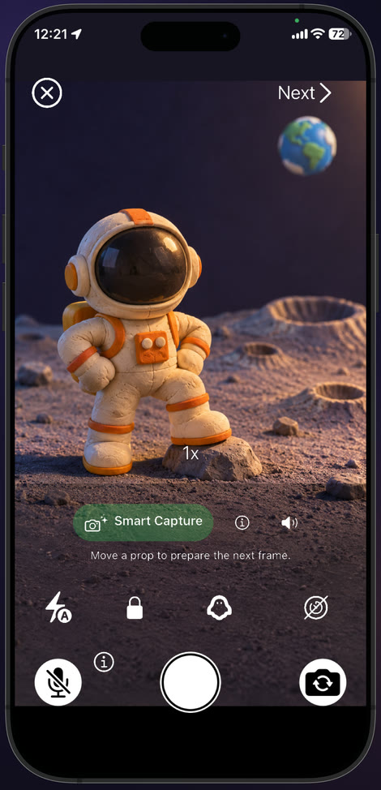
Give a clay character a personality, send your old toys on an adventure, or spend an evening making something just for fun.
Take turns moving props, trade ideas for what happens next, and make a short film with friends or family.
Make a playful reveal, show how you package an order, or give customers a behind-the-scenes look at what you make.
A banana and a handful of berries are enough to make a little film. These recordings show how the scene comes together in StopMotionCraft on iPhone and iPad.
Set a supported iPhone or iPad on a stable surface. Smart Capture waits for your hands to clear and the scene to settle before it takes a frame.
Reorder frames, cut what doesn’t fit, and adjust the pace. Add music, or record dialogue and sound effects with Premium.
Export a video or a looping GIF, ready to send to friends or share wherever you post.
Explore the camera, frame editor, voice recorder, and project library.
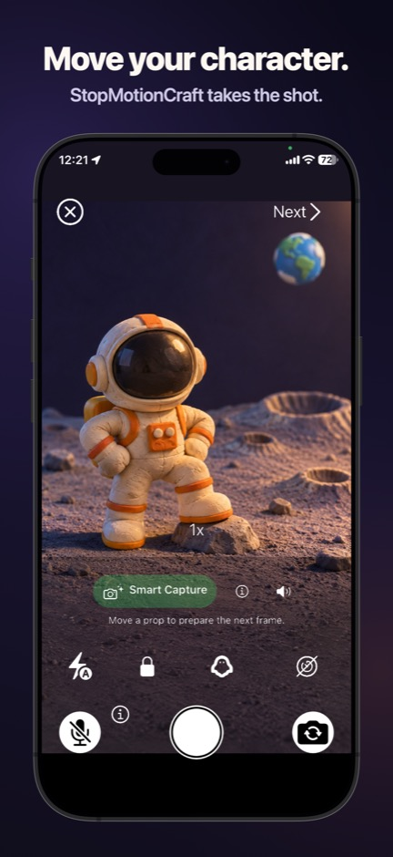
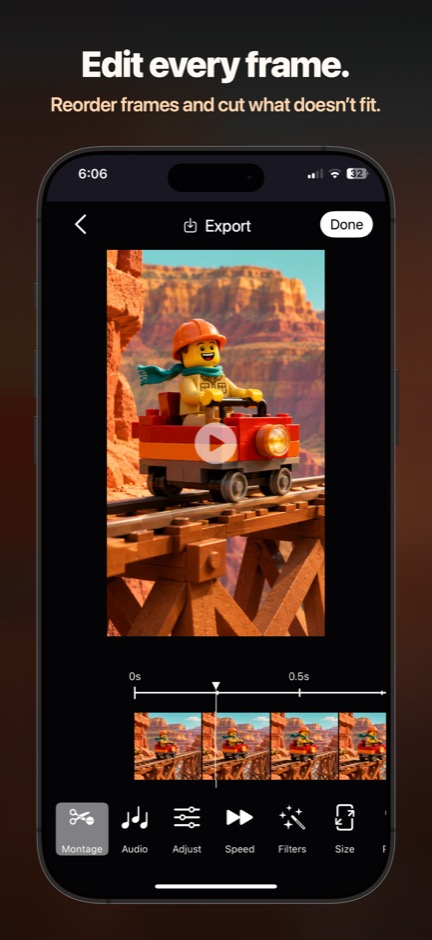
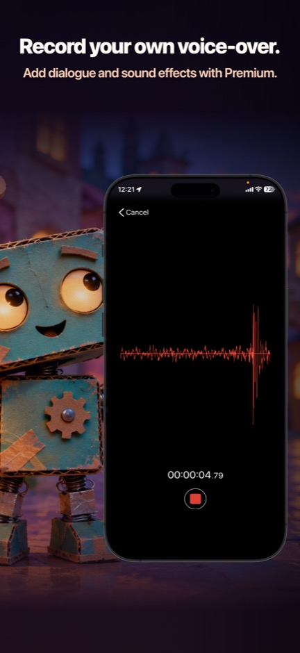
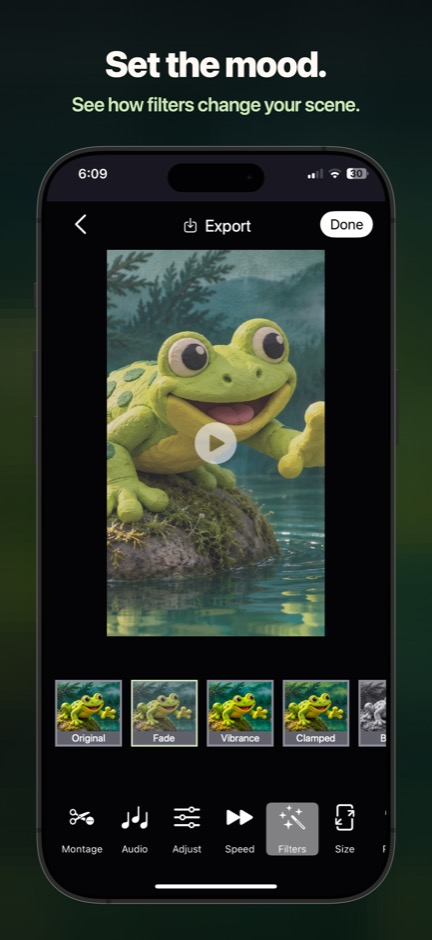
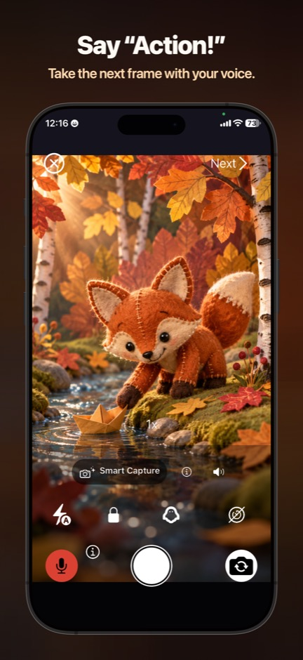
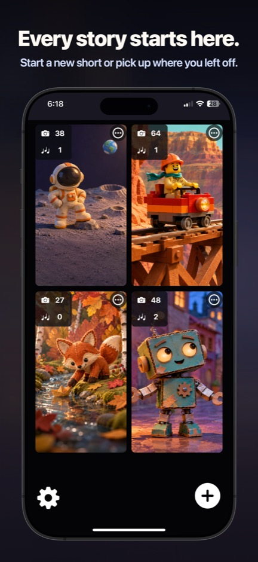
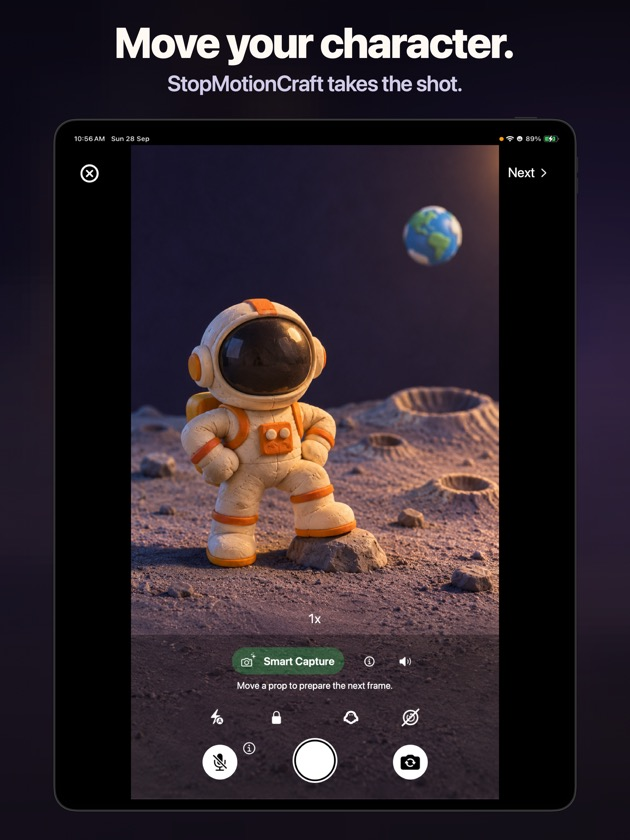
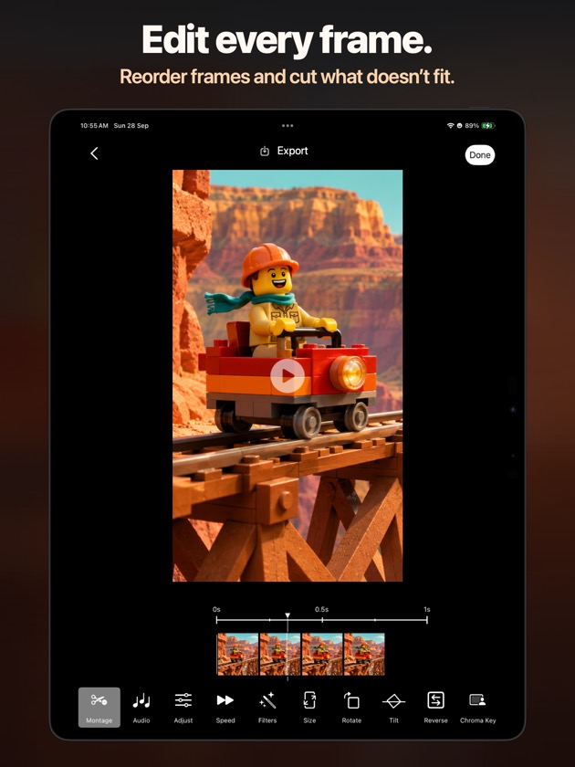
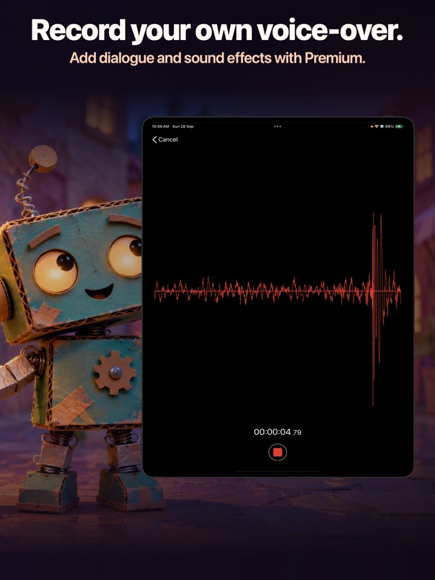
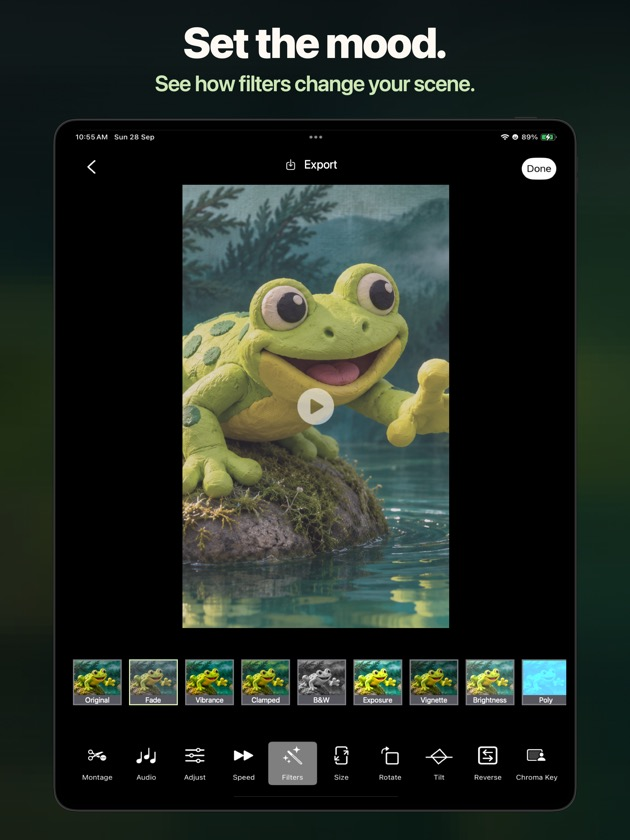
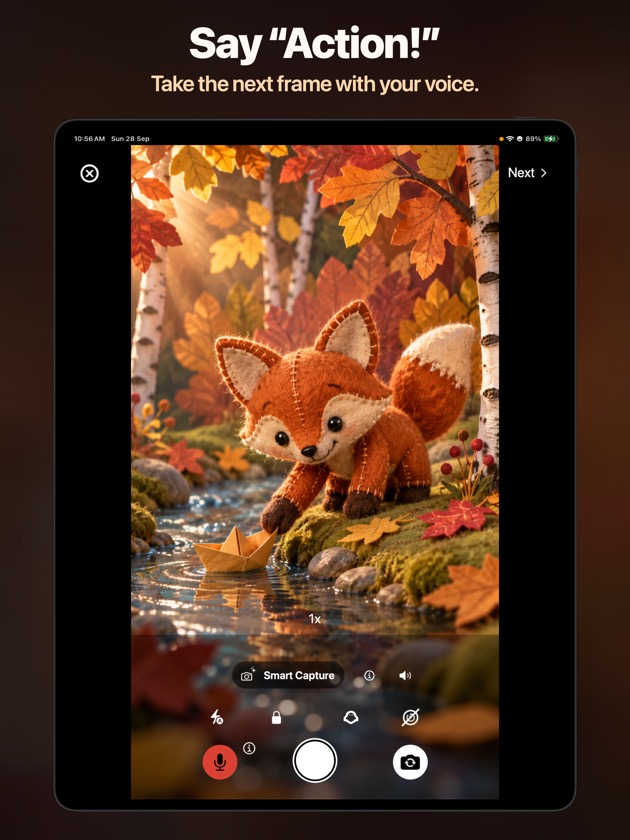
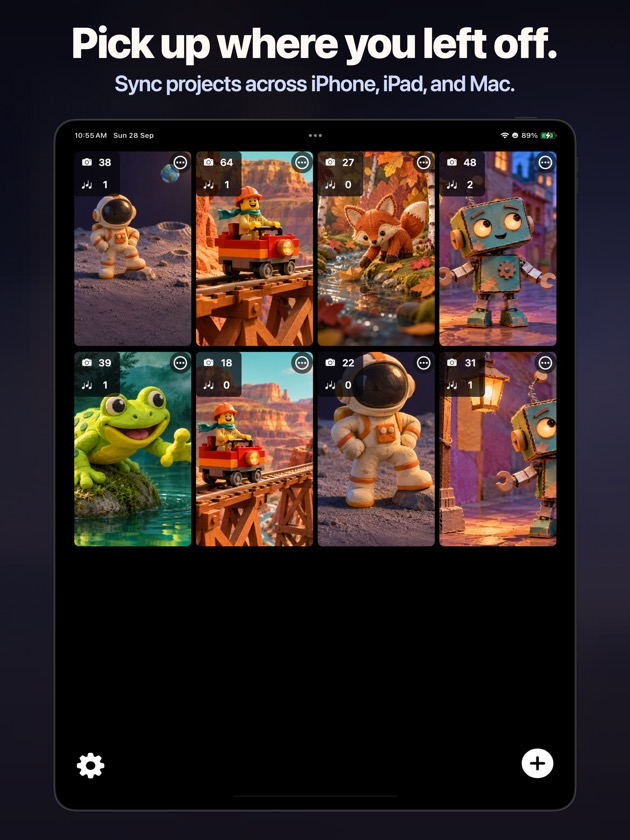